vacancy_vs_rent_change.RmdThis vignette uses the cmhc package to download vacancy and rent change data for several areas and visualize them on the same graph to highlight the relationship between the two.
To install and use cmhc simply download the repository from Github.
#devtools::install_github("mountainmath/cmhc")
library(cmhc)First we read in the data using the cmhc package and join the tables we want and tidy up. cmhc comes with the ability to convert back and forth between census geographic identifiesrs and CMHC geographic identifiers, which unfortunately are different. For example, to convert from the StatCan census geographic identifier 59933 for the Vancouver CMA to CMHC region parameters we call:
cmhc_region_params_from_census("59933")## $geography_type_id
## [1] "3"
##
## $geography_id
## [1] "2410"The CMHC API is a bit of a mess. cmhc uses several internal functions to access data via the CMHC API. The function below makes calls to the CMHC API and returns vacancy and rent price data for a given CMHC city id in a tidy way that we can then use for analysis or graphing.
library(dplyr)
library(tidyr)
regions <- c("59933"="Vancouver","24462"="Montréal","35535"="Toronto")
data <- regions %>%
lapply(function(name){
region <- cmhc_region_params_from_census(names(regions[regions==name]))
dat_vacancy <- get_cmhc(cmhc_timeseries_params(
table_id = cmhc_table_list$`Rms Vacancy Rate Time Series`,
region = region
)) %>%
select(Year=X1,vacancy_rate=Total)
dat_rent_change <- get_cmhc(cmhc_timeseries_params(
table_id = cmhc_table_list$`Rms Rent Change Time Series`,
region = region
)) %>%
select(Year=X1,rent_change=Total)
inner_join(dat_vacancy,dat_rent_change,by="Year") %>%
mutate(City=name)
}) %>%
bind_rows()Let’s take a look at this data now.
data %>%
group_by(City) %>%
slice_tail(n=3)## # A tibble: 9 × 4
## # Groups: City [3]
## Year vacancy_rate rent_change City
## <chr> <dbl> <dbl> <chr>
## 1 2019 October 1.5 3.6 Montréal
## 2 2020 October 2.7 4.2 Montréal
## 3 2021 October 3 3.6 Montréal
## 4 2019 October 1.5 6.4 Toronto
## 5 2020 October 3.4 4.7 Toronto
## 6 2021 October 4.5 1 Toronto
## 7 2019 October 1.1 4.7 Vancouver
## 8 2020 October 2.6 2 Vancouver
## 9 2021 October 1.2 2.1 VancouverAnd combine it into a single data frame for comparing directly:
With the data all tidy, we can now plot it easily.
library(ggplot2)
ggplot(cmhc, aes(x = Year, y = Rate, color = Series)) +
geom_line() +
geom_point() +
facet_grid(City~.) +
labs(title="Vacancy Rate vs Change in Rent",
subtitle ="Select Cities",
caption="Source: CMHC Rms, code: https://github.com/mountainMath/cmhc") +
scale_y_continuous(labels = scales::percent) +
xlab("") +
scale_x_date(breaks = seq(as.Date("1990-10-01"), as.Date("2017-10-01"), by="2 years"),
date_labels=format("%b %Y")) +
scale_color_manual(labels = c("% Rent Change\n(fixed sample)","Vacancy Rate"), values = c("darkgreen", "steelblue"), name = "") +
theme_minimal() +
theme(axis.text.x = element_text(angle = 90, hjust = 1))